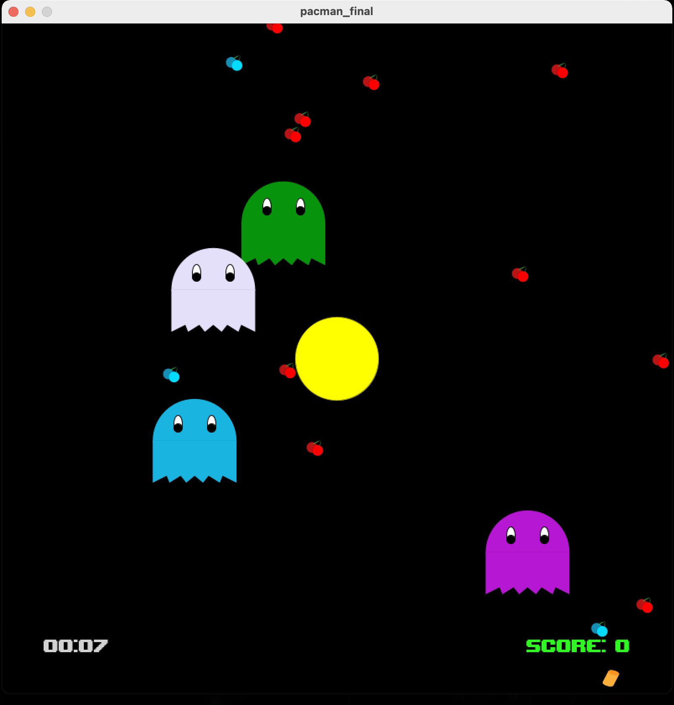
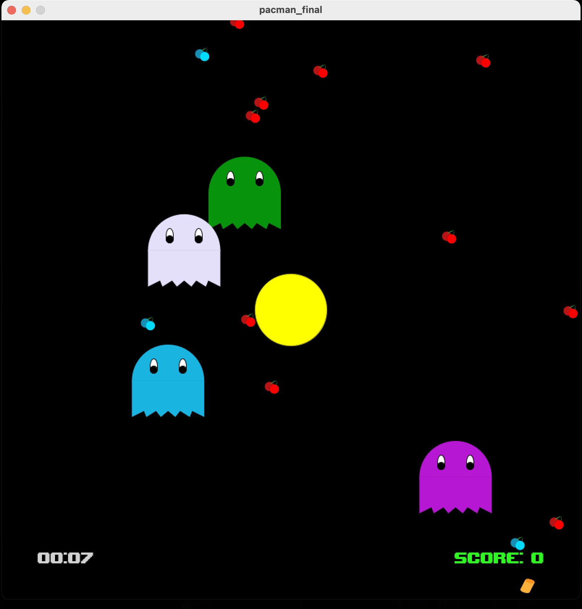

Pacman 1.1Java Bootcamp |
As my first programming project, to conclude the 2 week Programming Bootcamp at City, i decided to make a game inspired by pacman. This project demonstrates use of arrays, loops, classes and objects. As first scene, the user is presented a menu, where rules and info are shown. To start the game, the user must press the spacebar (keyboard interaction). The game is made of 3 general elements: Pacman, ghosts and food. Each of these has its own class with its own attributes. The initial position of ghosts and food is random, and is stored in a 2d array. There are different types of food which have different effects on the user, e.g. red food is worth 1 point, blue food 10 points and Boost gives a speed boost to the user. The speed at which the ghosts move is randomly generated each game, alongisde their color. Ghosts have a bouncing effect, where as Pacman can go through the border of the canvas. Time and score is displayed at the bottom of the screen, left and right respectively. When pacman touches any of the ghosts, the game is over. If the user reaches 300 points he wins. At the end a screen display either victory or loss, time and score values. To close the game the user has to click anywhere in the canvas (mouse interaction). For time purposes, win condition in demo is set to 50 points. Check out the code on Github. |
 



|
|
ShootingGame2d Game |
In my second term of my first year of university, i developed a 2d game in Java. The game is built on the CityEngine, which is a simple wrapper aorund the JBox2D physics engine. As you start the game, you are presented a main menu. From here you can start a new game, laod a game, change settings or exit the game. The game has four diffferent levels, each level has its own theme, controls and objectives. The main goal of the game is to collect coins and kill enemies. The user can pause to game inorder to save the current sate of the game. There are three quick save options, or the user can decide where to save the game. The user can then load these games from the main menu. From the settings, the volume can be adjusted/muted. The user can also choose to show/hide controls and objectives. The enemies in each level are different in look and how they shoot, some slow you down others shoot multiple times at once. In the game screen, character stats, like coins collected and health bar, are shown. To progress onto the next level, the user has to pass into a portal. This can only be done if the user has completed all the objectives for that level. The game code presents uses of classes, java swing gui, encapsulation, inheritance, use of collections and javadoc. |